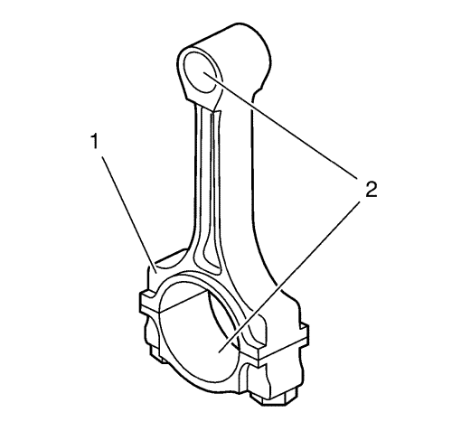
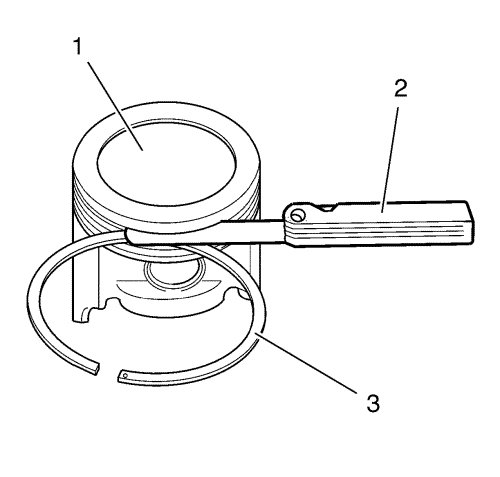
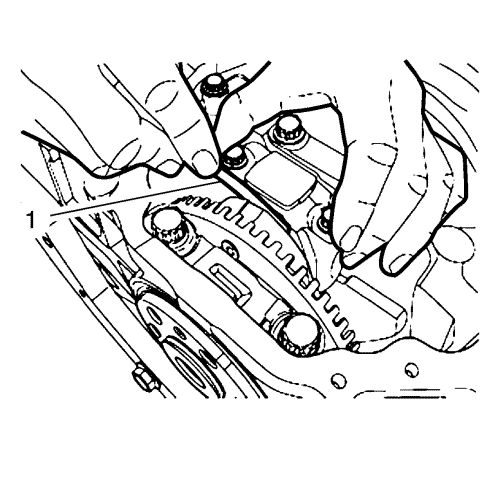

Limpieza e inspección de pistones, bielas y cojinetes
Examen visual y procedimiento de limpieza
Biela
Advertencia: Consulte Advertencia sobre el uso de gafas de seguridad y aire comprimido en la sección Prólogo.

- Limpiar las bielas (1) con disolvente y secarlas utilizando aire a presión.
- Compruebe si las bielas presentan lo siguiente:
| • | Indicios de deformación, dobleces, pérdida de metal o grietas |
| • | Arañazos o abrasión en la superficie del asiento del cojinete de biela |
- Si el cuerpo de biela está arañado o muestra otro tipo de daños, sustituir la biela.
- Si la holgura sigue siendo excesiva, sustituir la biela.
Pistón

- Limpie las faldas y los bulones de los pistones con un disolvente. NO utilice un cepillo de alambre en ninguna parte del pistón.
- Limpiar las ranuras de los segmentos del pistón con un limpiador especial para ranuras. Asegúrese de que los orificios y ranuras del segmento de aceite estén limpios.
- Examinar los pistones por si se observan las siguientes condiciones:
| • | Roturas en las pistas de los segmentos, grietas en las faldas o alojamientos de los bulones. |
| • | Dentelladas o rebabas en las ranuras de los segmentos que pudieran producir agarrotamiento. |
| • | Zonas erosionadas en la cabeza del pistón (1). |
| • | Arañazos o daños en las faldas de los pistones (2). |
| • | Desgaste en el alojamiento del bulón del pistón (3). |
- Si hay un desgaste excesivo, sustituya el pistón.
Procedimiento de medición del pistón y la biela
Holgura del bulón del pistón al orificio de la biela y el orificio del pistón
Mida la holgura entre el bulón del pistón y el orificio de la biela. Use el siguiente procedimiento:
Mida el diámetro exterior del bulón del pistón.
Mida el diámetro del orificio de la biela.
Reste el diámetro del segmento del pistón del diámetro de la biela.
Consultar Especificaciones mecánicas del motor .
Holgura del segmento de pistón

- Monte los segmentos de pistón en el cilindro como se muestra (1) y mida la separación entre las puntas del segmento del pistón. Compare las mediciones con el Especificaciones mecánicas del motor.
- Si las separaciones son mayores que los valores especificados, deberán sustituirse los segmentos.

- Mida la holgura lateral del segmento del pistón tal y como se indica (1). Compare las mediciones con el Especificaciones mecánicas del motor.
- Si la holgura es superior a los valores especificados, sustituya los segmentos.
- Si la holgura sigue siendo excesiva, sustituya los pistones.
Holgura del cojinete de biela
- Revise el juego axial de la biela y consulte Especificaciones mecánicas del motor.
- Medir la holgura entre el bulón del pistón y el orificio del muñón de la biela utilizando el procedimiento siguiente:
| 2.1. | Utilizando un micrómetro de exteriores, medir el bulón del pistón en 2 puntos en la zona donde hace contacto con la superficie del muñón de la biela. |
| 2.2. | Utilizar un micrómetro de interiores y medir el alojamiento del bulón del pistón en la biela. |
| 2.3. | Restar el valor del diámetro del bulón al valor del diámetro del alojamiento en la biela. |
- Compare las mediciones con el Especificaciones mecánicas del motor.
- En caso de exceder dicha holgura, sustituir el bulón del pistón.

- Revise el juego axial de la biela.
- Compare las mediciones con el Especificaciones mecánicas del motor.
| © Copyright Chevrolet. All rights reserved |